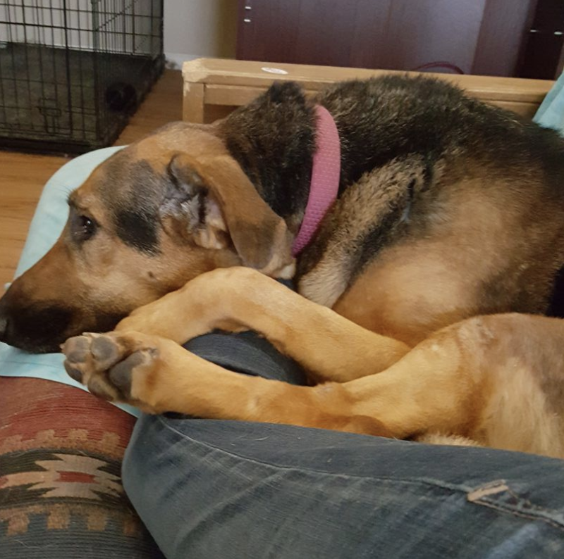
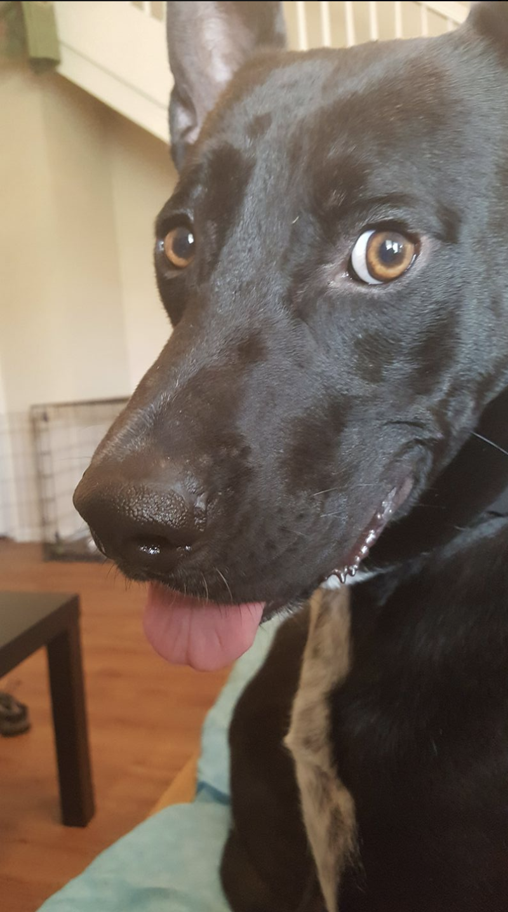

Firefly is a German Shepherd mix. She turns 5 years old on January 12. She weighs 101 lbs! Firefly is allergic to chicken and lamb. She has horrible skin allergies, so she takes medicine and coconut oil with her expensive specialty food. She knows "sit", "come", "leave it", "drop it", "down", "off", and "Let's Go!". Her favorite game is sitting on the couch watching tv. 
Nimoy is a black mixed breed dog. He also turns 5 next year. He weighs 75 lbs, and it's all muscle, no matter what the vet says! He loves fetch, and will collect all the tennis balls in the dog park. He knows "sit" and "come". He can sometimes act aloof like a cat, but is really just a goofy cuddlebug. 